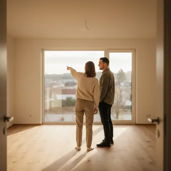

deutschoderwas · Sprechclub · Woche 4 · Strang A · Teil 1 · Montag, 5. Oktober
In der Wohnung: wo steht eigentlich was?
Jemand ruft aus dem Nebenzimmer: „Wo ist die Schere?“ — und du musst in einem Satz sagen, wo sie liegt. Dafür brauchst du zwei Dinge: die Möbel und das kleine Wort davor.
Gleiches Thema, andere Sätze. Wechsle jederzeit — probier ruhig beide Seiten aus.
Sechzig Minuten, sechs Leute
So läuft die Stunde. Jede Zeile sagt, wie lange, in welcher Aufstellung und wer spricht.
0–4👋
AnkommenEine Frage, reihum ein Satz. Kein Kommentar dazwischen.alle sechs, je etwa 30 Sekunden
4–12💬
Sätze für heuteDie Sätze laut lesen, dann zwei selbst bauen.erst gemeinsam, dann zwei Freiwillige
12–20🎬
DialogZwei lesen vor. Dann alle gleichzeitig, danach Rollentausch.drei Paare
20–27✅
ÜbenQuiz und Lücken zusammen am Bildschirm.reihum, jede Person eine Aufgabe
27–33⏱️
90 SekundenEiner spricht, der andere hakt die Zielwörter ab. Dann Tausch.drei Paare, zwei Runden
33–45⚖️
DebatteDrei gegen drei. Zwei Minuten sammeln, dann vier Wortmeldungen je Seite.zwei Dreiergruppen
AbschlussEin Satz pro Person: Was nimmst du mit?alle sechs
Wer zu fünft oder zu siebt ist: bei fünf machen eine Dreiergruppe und ein Paar den Dialog, bei sieben spricht in den Paarphasen eine Dreiergruppe — dort dauert jede Runde eine Minute länger.
Erst mal ankommen
Eine Frage, ein Satz pro Person. Reihum, ohne Kommentar dazwischen — das dauert genau vier Minuten.
0–4 Minalle sechs, je etwa 30 Sekunden
Wie viele Zimmer hat deine Wohnung?
Wenn noch Zeit ist:In welchem Zimmer bist du am liebsten?
Antworte in einem Satz. Wer nicht weiterweiß, fängt mit „Bei mir war das so: …“ an — der Rest kommt dann von allein.
Vier Bausteine, und der Satz sitzt
Zimmer nennen, Stelle nennen, Verb wählen, nachfragen. Mehr braucht kein einziger Satz über eine Wohnung.
1 · 🏠 Das Zimmer nennen im Wohnzimmerin der Kücheim Flur
So klingt esDer Fernseher steht im Wohnzimmer.
2 · 📍 Die Stelle nennen auf dem Tischunter dem Bettneben dem Sofa
So klingt esDie Fernbedienung liegt unter dem Kissen.
3 · 🪑 Das Verb wählen stehtliegthängt
So klingt esDie Jacke hängt an der Tür, die Tasche steht darunter.
4 · ❓ Danach fragen Wo ist …?Wo steht …?Hast du … gesehen?
So klingt esWo ist denn der Schlüssel? Hast du ihn gesehen?
1 · 🧭 Die Lage beschreiben hinten linksgleich rechts neben der Türauf der anderen Seite
So klingt esDas Bad liegt hinten links, gleich neben dem Schlafzimmer.
2 · 📏 Genauer werden zwischen dem Regal und dem Fensterin der hinteren Eckedirekt über der Heizung
So klingt esDer Router steht in der hinteren Ecke, zwischen dem Regal und dem Fenster.
3 · 🔁 Von Wo zu Wohin Ich stelle es …Häng es bitte …Das kommt …
So klingt esDas Bild kommt an die Wand über dem Sofa — nicht neben die Tür.
4 · 💬 Sich einigen Was hältst du davon, wenn …?Mir wäre lieber, …Probieren wir es erst mal …
So klingt esMir wäre lieber, das Regal käme an die andere Wand — probieren wir es erst mal so?
Verb das Möbelstück die genaue Stelle Höflichkeit
📣 Sofort anwenden: Beschreibe deinem Partner dein echtes Wohnzimmer, ohne es zu zeigen. Er zeichnet mit. Danach vergleicht ihr — jedes falsch platzierte Möbelstück war ein ungenauer Satz.
Vier Situationen — zwei Runden
Runde 1: Lest den Dialog zu zweit laut. Runde 2: Deckt die Zeilen von B ab und sprecht frei — die Hinweise reichen.
Dialog 1 · „Die neue Wohnung zeigen“
Eine Freundin kommt zum ersten Mal zu Besuch. Du führst sie kurz durch die Wohnung.
A
Oh, schön hell! Wie viele Zimmer habt ihr denn?
B
Drei. Hier vorne ist das Wohnzimmer, hinten links das Schlafzimmer.
🗣️ Erst die Zahl, dann die Lage. vorne und hinten links reichen völlig.tippen = Hilfe zeigen
A
Und die Küche?
B
Die Küche liegt gleich rechts neben der Tür. Komm, ich zeig sie dir.
🗣️ liegen für Räume, neben der Tür mit Dativ. Und ein Angebot hinterher.tippen = Hilfe zeigen
A
Habt ihr auch einen Balkon?
B
Ja, auf dem Balkon stehen sogar schon zwei Stühle. Der Tisch fehlt noch.
🗣️ auf dem Balkon — nie in. Und: was schon da ist, was noch fehlt.tippen = Hilfe zeigen
A
Und wo kommt der Fernseher hin?
B
Der kommt an die Wand über die Kommode. Da ist noch Platz.
🗣️ Jetzt Wohin: an die Wand, über die Kommode — Akkusativ, weil etwas seinen Platz bekommt.tippen = Hilfe zeigen
Dialog 2 · „Wo ist bloß die Fernbedienung?“
Ihr sucht zu zweit etwas Kleines, und es taucht nicht auf.
A
Hast du die Fernbedienung gesehen?
B
Die lag doch vorhin noch auf dem Tisch.
🗣️ lag — Vergangenheit von liegen. Und doch zeigt: Du bist dir ziemlich sicher.tippen = Hilfe zeigen
A
Da ist sie nicht. Ich hab schon zweimal geschaut.
B
Dann schau mal unter dem Kissen. Oder zwischen den Sofakissen.
🗣️ Zwei Vorschläge hintereinander. unter dem, zwischen den — beides Dativ.tippen = Hilfe zeigen
A
Nichts. Vielleicht im Schlafzimmer?
B
Warte — ich glaube, sie liegt noch neben dem Bett auf dem Nachttisch.
🗣️ Ich glaube macht aus einer Behauptung eine Vermutung. Sehr nützlich.tippen = Hilfe zeigen
A
Ha! Genau da. Wie kommt die denn dahin?
B
Keine Ahnung. Legen wir sie ab jetzt immer aufs Regal, dann finden wir sie.
🗣️ aufs Regal = auf das Regal, Akkusativ — jetzt bewegt sich etwas.tippen = Hilfe zeigen
Dialog 3 · „Einräumen nach dem Umzug“
Ihr räumt zusammen einen Schrank ein und müsst euch dauernd absprechen.
A
Wohin mit den Handtüchern?
B
Leg sie ins Bad, ins Regal über der Waschmaschine.
🗣️ ins Bad, ins Regal — Wohin. Aber über der Waschmaschine: die Waschmaschine bewegt sich ja nicht.tippen = Hilfe zeigen
A
Und die Winterjacken? Die brauchen wir jetzt nicht.
B
Die kommen in den Keller. Unten stehen noch leere Kisten.
🗣️ in den Keller (Wohin) — unten stehen Kisten (Wo). Beides in zwei Sätzen.tippen = Hilfe zeigen
A
Soll das Bügelbrett auch runter?
B
Nein, stell es lieber hinter die Tür im Flur. Da stört es nicht.
🗣️ stellen braucht immer ein Objekt und Wohin: stell es hinter die Tür.tippen = Hilfe zeigen
A
Okay. Und dann sind wir durch?
B
Fast. Die Bilder hängen wir morgen auf — heute reicht es.
🗣️ aufhängen ist trennbar: hängen … auf. Die Vorsilbe geht ans Ende.tippen = Hilfe zeigen

Dialog 4 · „Am Telefon beschreiben“
Deine Mutter ruft an und will genau wissen, wie die neue Wohnung aussieht.
A
Und? Erzähl mal, wie ist sie?
B
Größer als gedacht. Vom Flur gehen alle Zimmer ab.
🗣️ abgehen ist genau das Wort für einen Grundriss. Klingt gleich wie ein Makler.tippen = Hilfe zeigen
A
Ist das Wohnzimmer hell?
B
Sehr. Die Fenster liegen nach Süden, und über der Tür ist noch ein kleines.
🗣️ nach Süden liegen — feste Wendung. Und wieder über der Tür, Dativ.tippen = Hilfe zeigen
A
Wo steht denn dein Schreibtisch?
B
Zwischen dem Fenster und dem Regal. Da habe ich am meisten Licht.
🗣️ zwischen braucht zwei Dinge — und zweimal Dativ: dem … dem.tippen = Hilfe zeigen
A
Und der Keller? Habt ihr einen?
B
Ja, ein eigenes Abteil. Da stelle ich alles rein, was oben keinen Platz hat.
🗣️ reinstellen — umgangssprachlich für hineinstellen. Sehr häufig beim Umzug.tippen = Hilfe zeigen
🎭 Und jetzt ihr: Spielt Dialog 2 noch einmal — aber diesmal ist der gesuchte Gegenstand euer eigenes Handy, und ihr dürft nur mit Wo-Sätzen antworten. Wer zeigt statt spricht, gibt ab.
🧩 Wo etwas ist: in, auf, an + Dativ
Neun kleine Wörter, ein Fall. Solange nichts sich bewegt, steht danach immer der Dativ — und der Artikel ändert sich nach einem festen Muster.
Die Ortswörter in, an, auf, über, unter, vor, hinter, neben, zwischen können zwei Fälle. Heute nehmen wir nur einen: den Dativ für die Frage Wo? Der Artikel wird dabei zu dem (der/das) oder der (die). Zwei Formen zieht man fast immer zusammen: in dem = im und an dem = am. Wer im Schrank, am Fenster und auf dem Tisch sicher hat, kann schon fast jede Wohnung beschreiben.
📦in + Dativ = innenDie Teller sind im Schrank.
▾
🪟an + Dativ = direkt danebenDer Schreibtisch steht am Fenster.
▾
🍽️auf + Dativ = oben draufDas Brot liegt auf dem Tisch.
▾
🖼️über + Dativ = darüberDas Bild hängt über dem Sofa.
Was?Die Lampe
Verb an zweiter Stellehängt
Ortswortüber
Dativdem Esstisch.
Der Artikel im Dativ
Drei Zeilen, mehr ist es nicht. Lies sie laut, bis sie von selbst kommen — das spart dir später jedes Nachdenken.
🔵
der und das → dem
beide werden gleich
im Keller · im Bad
🔴
die → der
der auffälligste Wechsel
in der Küche · an der Wand
🟡
Plural → den + n
das Nomen bekommt ein n dazu
auf den Regalen · in den Zimmern
der Schrank → in dem Schrank → im Schrankdas Regal → in dem Regal → im Regaldie Küche → in der Kücheder Tisch → auf dem Tischdie Wand → an der Wand → an der Wanddie Fenster (Plural) → an den Fenstern
stehen, liegen, hängen — und sitzen
Deutsch sagt nicht nur „ist“, sondern wie etwas da ist. Das Verb ist keine Feinheit, sondern das erste, was auffällt, wenn es fehlt.
🍶
stehen
hat Beine, Füße oder einen Boden
Die Flasche steht im Kühlschrank.
📗
liegen
ist flach oder ausgebreitet
Das Buch liegt auf dem Nachttisch.
🧥
hängen
hängt an etwas fest
Die Jacke hängt im Flur.
🍾 aufrecht mit Standfläche → steht📖 flach ausgebreitet → liegt🖼️ an Haken oder Nagel → hängt🧒 auf einem Stuhl, ein Mensch → sitzt❄️ im Kühlschrank: Flasche steht, Käse liegt🚗 das Auto steht in der Garage
🧱 Bau die Sätze selbst
Tippe die Teile in der richtigen Reihenfolge an. Danach auf „Prüfen“ — und den fertigen Satz laut lesen.
📖 Und jetzt im Zusammenhang
Ein Sonntagmorgen, an dem niemand etwas findet. Wähle in jeder Lücke das passende Wort.
Drei Handgriffe, immer in dieser Reihenfolge:
Erst die Frage: Wo? → Dativ. Wohin? → Akkusativ. Ohne diese Frage rätst du nur.
Dann der Artikel: der/das werden zu dem, die wird zu der, Plural wird zu den + n.
Dann zusammenziehen:in dem spricht niemand — es heißt im. Genauso an dem → am.
Kontrolle: Steht in deinem Satz steht, liegt, hängt oder ist? Dann muss es Dativ sein.
Ein Satz zum Auswendiglernen, der alles enthält: „Im Schrank, an der Wand, auf dem Tisch, in den Regalen.“ Vier Formen, alle vier Fälle des Dativs.
✅ Sitzt es schon?
8 Fragen. Tippe auf deine Antwort — die Erklärung kommt sofort.
✍️ Lückentext
Wähle in jeder Lücke das passende Wort.
📣 Danach laut: Jeder nennt reihum einen Gegenstand aus seinem Zimmer. Der Nachbar sagt sofort einen Satz mit dem passenden Verb — steht, liegt oder hängt. Wer zögert, gibt weiter.
⏱️ Die 90-Sekunden-Challenge
Ein Wort, anderthalb Minuten, freies Sprechen. Es muss nicht perfekt sein — es muss nur weitergehen.
Dein Wort
das Wohnzimmer
1:30
Geh einfach durch den Raum, dann trägt sich die Zeit von selbst:
Wo steht es? Das steht bei mir im …
Was ist daneben? Rechts davon ist …, links …
Wer benutzt es? Meistens sitzt da …
Und wenn du umziehen müsstest? Das käme dann …
Und wenn dir ein Wort fehlt: beschreib es. „Das Ding, auf dem der Fernseher steht“ versteht jeder.
⏱️ Spielregel: In jeder Runde müssen mindestens drei verschiedene Ortswörter vorkommen. Der Partner zählt mit und hebt bei drei die Hand.
Drei gegen drei
Zwei Gruppen, eine Frage. Zwei Minuten sammeln, dann spricht jede Seite viermal — abwechselnd.
33–45 Minzwei Dreiergruppen
Was würdest du sofort ändern, wenn du dürftest?
Gruppe A · dafür
Sammelt zwei Gründe und ein Beispiel aus eurem Alltag.
Gruppe B · dagegen
Sammelt zwei Gegengründe und einen Fall, in dem es schiefgeht.
Sätze, die eine Debatte tragen
Ich sehe das anders, weil …Da stimme ich zu, aber …Genau das ist der Punkt: …Das mag sein — trotzdem …Wenn das stimmt, warum dann …?Ich bleibe dabei: …
Wenn die erste Frage durch ist
Welches Möbelstück hat bei dir schon dreimal den Platz gewechselt?
Wohnt man in deinem Land eher groß oder eher praktisch?
Gibt es in deiner Sprache auch verschiedene Verben dafür?
Warum sagt man „Der Teller steht“, aber „Das Besteck liegt“?
Jede Wortmeldung beginnt mit einem der Sätze oben. Das klingt am Anfang steif — und ist genau das, was in der Prüfung und in der Besprechung zählt.
🎭 Drei Situationen zu zweit
Einer fragt, einer beschreibt. Danach tauschen — und beim zweiten Mal ohne die Stichwörter.
1 · Die Wohnung am Telefon zeigen
A hat eine neue Wohnung und beschreibt sie am Telefon. B zeichnet währenddessen den Grundriss und fragt nach, wenn etwas unklar bleibt.
Wie viele Zimmer hat sie?Das Wohnzimmer ist vorneDie Küche liegt neben dem BadWo steht dein Bett?
Vom Flur gehen alle Zimmer abDie Fenster liegen nach SüdenZwischen dem Regal und dem FensterWas würdest du anders stellen?
✅ Eine gute Runde enthältB kann den Grundriss am Ende grob nachzeichnen. A hat mindestens vier verschiedene Ortswörter benutzt und jedes Mal den Dativ getroffen.
2 · Zusammen einräumen
A und B ziehen zusammen und müssen sich bei jedem Möbelstück einigen. Sie sind nicht immer einer Meinung — das gehört dazu.
Wohin kommt das Regal?Stell es bitte an die WandDas Sofa steht besser am FensterUnd der Schrank ins Schlafzimmer
Mir wäre lieber, wenn …Probieren wir es erst mal soDa steht es im WegDann tauschen wir die beiden
✅ Eine gute Runde enthältBeide benutzen abwechselnd Wo und Wohin — und man hört den Unterschied: steht an der Wand gegen stell es an die Wand.
3 · Etwas ist verschwunden
A sucht etwas Wichtiges und findet es nicht. B hat es zuletzt gesehen und macht Vorschläge, wo es sein könnte — ohne aufzustehen.
Hast du meinen Schlüssel gesehen?Er lag doch auf dem TischSchau mal in der JackeNein, da ist er nicht
Ich glaube, er liegt noch …Hast du schon unter … geschaut?Vielleicht hast du ihn … gelassenDann muss er im Auto liegen
✅ Eine gute Runde enthältB macht mindestens vier verschiedene Vorschläge mit vier verschiedenen Ortswörtern. Niemand zeigt mit dem Finger — es wird nur gesprochen.
🎴 Sprechkarten
Zieh eine Karte und sprich mindestens vier Sätze am Stück.
Deine Aufgabe
Tippe auf den Knopf.
📮 Deine Hausaufgabe bis Mittwoch
Vier kleine Aufgaben, zusammen etwa 25 Minuten. Am Mittwoch geht es weiter: Was sagst du, wenn etwas kaputt ist?
💡 Warum das hilft: Diese Sätze brauchst du täglich — beim Suchen, beim Einräumen, beim Erklären am Telefon. Und der Dativ nach Ortswörtern ist der häufigste Fall im ganzen Alltagsdeutsch.
0 von 0 Aufgaben geschafft.
So sehen die Paare aus:
Der Stuhl steht am Fenster. → Ich stelle den Stuhl ans Fenster.
Das Buch liegt auf dem Tisch. → Ich lege das Buch auf den Tisch.
Die Jacke hängt an der Tür. → Ich hänge die Jacke an die Tür.
Die Kisten stehen im Keller. → Wir stellen die Kisten in den Keller.
Der Teppich liegt unter dem Tisch. → Wir legen den Teppich unter den Tisch.
Ein einziger Test: Bewegt sich etwas? Dann Akkusativ. Ist alles schon an seinem Platz? Dann Dativ.
So klingt eine kurze Anzeige:
Der Anfang: Helle 3-Zimmer-Wohnung im zweiten Stock, ruhige Lage.
Die Räume: Vom Flur gehen alle Zimmer ab; das Wohnzimmer liegt nach Süden.
Das Besondere: Balkon über dem Innenhof, Kellerabteil im Haus.
Die Küche: Einbauküche vorhanden, Waschmaschinenanschluss im Bad.
Der Schluss: Besichtigung nach Absprache, Einzug ab dem 1. des Monats.
In Anzeigen fehlen oft die Verben — das ist erlaubt. Aber wenn du sprichst, brauchst du sie wieder: Das Wohnzimmer liegt nach Süden.
📬 Abgabe: Schick deine Sprachnachricht bis Sonntag in die WhatsApp-Gruppe. Ich höre jede an und antworte dir persönlich.
🔜 Am Mittwoch, Teil 2:Etwas ist kaputt — melden und beschreiben. Der Wasserhahn tropft, die Heizung bleibt kalt: Wie sagst du das, ohne zu stottern?
Zum Schluss
Vier Minuten, sechs Sätze.
56–60 Minalle sechs
Ein Satz von jedem: Welchen Satz aus heute nimmst du mit — und wo wirst du ihn brauchen?